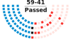
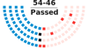
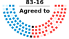
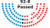
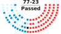

Voting Records
Each year the U.S. Senate and House of Representatives take thousands of votes, some to pass bills, resolutions, nominations, and treaties, and others on procedural matters such as on cloture and other motions. Not all votes are recorded, such as when there is no one opposed. This page shows the outcome of all recorded votes on the Senate floor and House floor. It does not include votes in committee.
Track Votes
Get an email every time Congress votes on a bill or other matter.
81 items matched your search.
House Vote #135
Mar 28, 2019 10:47 a.m.
Passed 238/185
On the Resolution in the House
House Vote #134
Mar 27, 2019 5:35 p.m.
Passed 242/187
On Passage of the Bill in the House
House Vote #131
Mar 27, 2019 1:40 p.m.
Passed 232/190
On the Resolution in the House
House Vote #129
Mar 26, 2019 2:38 p.m.
Passed 403/21
On Motion to Suspend the Rules and Pass in the House
House Vote #128
Mar 26, 2019 2:22 p.m.
Passed 404/21
On Motion to Suspend the Rules and Pass in the House
House Vote #126
Mar 25, 2019 6:59 p.m.
Passed 391/24
On Motion to Suspend the Rules and Pass, as Amended in the House

Senate Vote #49
Mar 14, 2019 2:24 p.m.
Joint Resolution Passed 59/41
On the Joint Resolution in the Senate
House Vote #125
Mar 14, 2019 10:30 a.m.
Passed 420/0
On the Resolution in the House

Senate Vote #48
Mar 13, 2019 6:04 p.m.
Joint Resolution Passed 54/46
On the Joint Resolution in the Senate
A recently House-passed bill, which seems likely to pass in the Senate, could mark President Trump's first veto in office. ## Context Yemen has been mired in a civil war since March 2015, between the internationally-recognized government and an Islamic armed rebel group called the Houthis, along with their allies ...
House Vote #124
Mar 13, 2019 1:59 p.m.
Passed 233/195
On the Resolution in the House
House Vote #123
Mar 12, 2019 2:50 p.m.
Passed 426/1
On Motion to Suspend the Rules and Pass, as Amended in the House
House Vote #122
Mar 12, 2019 2:40 p.m.
Passed 427/1
On Motion to Suspend the Rules and Pass, as Amended in the House
Should the U.S. officially recognize Russia’s annexation of the Crimea section of Ukraine? #### Context and what the bill does In 2014, Russia under Vladimir Putin claimed a portion of bordering Ukraine called Crimea as its own, in Europe’s biggest land acquisition since World War II. Many criticize this move ...
House Vote #121
Mar 12, 2019 2:22 p.m.
Passed 416/1
On Motion to Suspend the Rules and Agree, as Amended in the House
House Vote #120
Mar 11, 2019 7:06 p.m.
Passed 404/7
On Motion to Suspend the Rules and Pass, as Amended in the House
House Vote #119
Mar 11, 2019 6:56 p.m.
Passed 387/22
On Motion to Suspend the Rules and Pass in the House
Should families receiving government assistance for housing be encouraged to move to more well-off neighborhoods? #### Context The government’s Housing Choice Voucher (HCV) program was created in 1937 during the Great Depression to help low-income families afford housing costs. A person or family receiving the voucher chooses their own residence ...
House Vote #118
Mar 8, 2019 11:21 a.m.
Passed 234/193
On Passage of the Bill in the House
House Vote #108
Mar 7, 2019 5:32 p.m.
Passed 407/23
On Motion to Suspend the Rules and Agree, as Amended in the House
House Vote #107
Mar 6, 2019 2 p.m.
Passed 232/192
On the Resolution in the House
House Vote #105
Mar 5, 2019 7:07 p.m.
Passed 417/0
On Motion to Suspend the Rules and Pass in the House
House Vote #104
Mar 5, 2019 6:56 p.m.
Passed 416/0
On Motion to Suspend the Rules and Pass in the House
House Vote #103
Feb 28, 2019 noon
Passed 228/198
On Passage of the Bill in the House
House Vote #99
Feb 27, 2019 3:44 p.m.
Passed 240/190
On Passage of the Bill in the House
House Vote #95
Feb 26, 2019 6:41 p.m.
Passed 363/62
On Motion to Suspend the Rules and Pass in the House
House Vote #94
Feb 26, 2019 6:32 p.m.
Passed 245/182
On Passage of the Bill in the House
House Vote #93
Feb 26, 2019 3:30 p.m.
Passed 229/193
On the Resolution in the House
House Vote #91
Feb 26, 2019 3:10 p.m.
Passed 227/194
On the Resolution in the House
House Vote #89
Feb 25, 2019 7:30 p.m.
Passed 387/19
On Motion to Suspend the Rules and Pass in the House
House Vote #88
Feb 25, 2019 7 p.m.
Passed 385/18
On Motion to Suspend the Rules and Pass in the House
House Vote #87
Feb 14, 2019 8:59 p.m.
Passed 300/128
On the Conference Report in the House
This bill, in its final form, funded the parts of the federal government whose funding was to lapse on February 15, 2019. On December 22, 2018 the 115th Congress was unable to reach a deal to fund some federal agencies through fiscal year 2019 after President Trump demanded $5 billion ...
House Vote #86
Feb 14, 2019 7:35 p.m.
Passed 230/196
On the Resolution in the House

Senate Vote #26
Feb 14, 2019 3:59 p.m.
Conference Report Agreed to 83/16
On the Conference Report in the Senate
This bill, in its final form, funded the parts of the federal government whose funding was to lapse on February 15, 2019. On December 22, 2018 the 115th Congress was unable to reach a deal to fund some federal agencies through fiscal year 2019 after President Trump demanded $5 billion ...
House Vote #84
Feb 13, 2019 4:53 p.m.
Passed 418/0
On Motion to Suspend the Rules and Pass, as Amended in the House
Should there be a centralized and publicly searchable database of government lawsuit settlements? ## Context More than $4.3 billion in taxpayer money was used to settle lawsuits against the federal government or its employees in fiscal year 2016, through a little-known Treasury Department account known as the Judgment Fund. However, ...
House Vote #83
Feb 13, 2019 4:28 p.m.
Passed 248/177
On Passage of the Bill in the House
A recently House-passed bill, which seems likely to pass in the Senate, could mark President Trump's first veto in office. ## Context Yemen has been mired in a civil war since March 2015, between the internationally-recognized government and an Islamic armed rebel group called the Houthis, along with their allies ...
House Vote #79
Feb 13, 2019 1:50 p.m.
Passed 228/193
On the Resolution in the House

Senate Vote #22
Feb 12, 2019 4:31 p.m.
Bill Passed 92/8
On Passage of the Bill in the Senate
House Vote #77
Feb 11, 2019 7:04 p.m.
Passed 379/0
On Motion to Suspend the Rules and Pass, as Amended in the House
Currently, you have to mail or fax a physical letter for some actions undertaken by congressional offices. The CASES for Constituents Act would finally allow digital alternatives in addition. #### Context For 44 years and counting, the Privacy Act of 1974 has mandated that members of Congress get written authorization ...
House Vote #76
Feb 11, 2019 6:57 p.m.
Passed 377/3
On Motion to Suspend the Rules and Pass in the House
House Vote #75
Feb 8, 2019 11:34 a.m.
Passed 400/9
On Passage of the Bill in the House
Could expanded taxpayer-funded childcare options help more veterans access their VA medical appointments? #### Context 42 percent of women veterans report finding childcare as “very hard” or “somewhat hard,” according to a 2015 Department of Veterans Affairs study. 62 percent said they would find on-site childcare at VA-run medical centers ...
House Vote #71
Feb 7, 2019 2:59 p.m.
Passed 414/1
On Motion to Suspend the Rules and Pass in the House
House Vote #70
Feb 7, 2019 2:51 p.m.
Passed 417/0
On Motion to Suspend the Rules and Pass, as Amended in the House
House Vote #69
Feb 7, 2019 2:44 p.m.
Passed 225/193
On the Resolution in the House
House Vote #67
Feb 6, 2019 2:08 p.m.
Passed 399/22
On Motion to Suspend the Rules and Pass in the House
House Vote #66
Feb 6, 2019 1:58 p.m.
Passed 404/19
On Motion to Suspend the Rules and Pass in the House

Senate Vote #16
Feb 5, 2019 3:33 p.m.
Bill Passed 77/23
On Passage of the Bill in the Senate
What was the first legislation that Senate Republicans introduced this year? #### Context The very first bill introduced by a majority party in Congress sends an important message about what their legislative priorities are. In the previous Congress, House Republicans’ first bill was the Tax Cuts and Jobs Act which ...
House Vote #65
Jan 30, 2019 2:19 p.m.
Failed 249/163
On Motion to Suspend the Rules and Agree, as Amended in the House
House Vote #64
Jan 30, 2019 2:08 p.m.
Passed 259/161
On Passage of the Bill in the House
House Vote #61
Jan 30, 2019 10:39 a.m.
Passed 231/189
On the Resolution in the House
House Vote #58
Jan 29, 2019 3:02 p.m.
Passed 414/12
On Motion to Suspend the Rules and Pass in the House
House Vote #57
Jan 29, 2019 2:51 p.m.
Passed 412/12
On Motion to Suspend the Rules and Pass in the House
House Vote #56
Jan 29, 2019 2:41 p.m.
Passed 422/3
On Motion to Suspend the Rules and Pass in the House
When terrorists groups increasingly relying on Bitcoin and other similar virtual currencies, what should be done? #### Context Bitcoin is the most famous among several prominent virtual currencies, a new type of digital payment system to arise in the 2010s. These offer several features that “traditional” money doesn’t have, such ...
House Vote #53
Jan 28, 2019 7:05 p.m.
Passed 412/3
On Motion to Suspend the Rules and Pass in the House
House Vote #52
Jan 28, 2019 6:57 p.m.
Passed 413/3
On Motion to Suspend the Rules and Pass in the House
House Vote #51
Jan 24, 2019 10:48 a.m.
Passed 231/180
This bill was originally introduced to reopen just the Department of Homeland Security through February 28, 2019 and passed the House on January 24. No funding for a southern border wall was included. The bill was not considered by the Senate in that form. The bill was later amended and ...
House Vote #49
Jan 23, 2019 3:54 p.m.
Passed 234/180
On Passage of the Bill in the House
This was a House Democrat bill to reopen most of the federal government through September 30, 2019, with funding for most or all of the federal agencies that had been shut down except for the Department of Homeland Security. The bill was written using text from bills previously negotiated during ...
House Vote #47
Jan 23, 2019 1:56 p.m.
Passed 223/190
On the Resolution in the House
House Vote #46
Jan 23, 2019 1:44 p.m.
Passed 229/184
This vote was on one of House Democrats’ attempts to reopen the government. It was a continuing resolution to reopen the agencies whose funding lapsed at the start of the partial government shutdown through February 28, 2019. The bill was later amended and enacted with a different date.
House Vote #45
Jan 22, 2019 7:10 p.m.
Passed 377/3
On Motion to Suspend the Rules and Pass in the House
House Vote #44
Jan 22, 2019 7 p.m.
Passed 357/22
"The President shall not withdraw support from NATO." This was a vote on a House bill to prevent President Trump from withdrawing the United States from the North Atlantic Treaty Organization, or NATO. The legislation was passed in response to reports that the President had proposed withdrawing from the alliance ...
House Vote #42
Jan 17, 2019 12:40 p.m.
Passed 362/53
On Motion to Suspend the Rules and Pass in the House
House Vote #41
Jan 17, 2019 10:39 a.m.
Passed 422/0
On Motion to Suspend the Rules and Pass in the House
House Vote #40
Jan 17, 2019 10:31 a.m.
Passed 230/190
On the Resolution in the House
House Vote #39
Jan 16, 2019 5:54 p.m.
Passed 237/187
On Passage of the Bill in the House
This bill was one of many attempts by House Democrats to end the partial government shutdown without funding for a southern border wall. The bill would provide funding for emergency disaster relief for the rest of fiscal year 2019 (through September), in addition to reopening the agencies whose funding lapsed ...
House Vote #36
Jan 16, 2019 2:10 p.m.
Passed 415/6
On Motion to Suspend the Rules and Pass in the House
House Vote #35
Jan 16, 2019 2:02 p.m.
Passed 230/193
On the Resolution in the House
House Vote #33
Jan 15, 2019 3:37 p.m.
Passed 424/0
On Motion to Suspend the Rules and Pass in the House
House Vote #32
Jan 15, 2019 3:26 p.m.
Passed 424/1
On Motion to Suspend the Rules and Agree in the House
House Vote #31
Jan 15, 2019 3:17 p.m.
Failed 237/187
On Motion to Suspend the Rules and Pass in the House
House Vote #30
Jan 14, 2019 7:01 p.m.
Passed 403/2
On Motion to Suspend the Rules and Pass in the House
House Vote #29
Jan 11, 2019 12:23 p.m.
Passed 411/1
On Motion to Suspend the Rules and Pass in the House
House Vote #28
Jan 11, 2019 12:10 p.m.
Passed 411/7
On Motion to Suspend the Rules and Pass in the House
House Vote #27
Jan 11, 2019 12:02 p.m.
Passed 240/179
On Passage of the Bill in the House
House Vote #25
Jan 10, 2019 4:32 p.m.
Passed 243/183
On Passage of the Bill in the House
House Vote #23
Jan 10, 2019 4:15 p.m.
Passed 244/180
On Passage of the Bill in the House
House Vote #21
Jan 9, 2019 5:09 p.m.
Passed 240/188
On Passage of the Bill in the House
House Vote #18
Jan 9, 2019 2:13 p.m.
Passed 414/11
On Motion to Suspend the Rules and Pass in the House
House Vote #17
Jan 9, 2019 2:03 p.m.
Passed 231/195
On the Resolution in the House
House Vote #14
Jan 8, 2019 7:17 p.m.
Passed 414/3
On Motion to Suspend the Rules and Pass in the House
House Vote #13
Jan 8, 2019 6:59 p.m.
Passed 401/17
On Motion to Suspend the Rules and Pass in the House
House Vote #11
Jan 3, 2019 9:53 p.m.
Passed 241/190
This was a vote on the House Democrats' bill to fund the federal government until September 30, 2019 and end the shutdown that began on December 22, 2018. The bill does not include $5.6 billion in funding for a southern border wall, and as such the President has stated that ...
House Vote #9
Jan 3, 2019 9:34 p.m.
Passed 239/192
This was the vote on the House Democrats' continuing resolution to reopen the Department of Homeland Security (DHS) in the midst of the government shutdown beginning on December 22, 2018. The resolution does not include $5.6 billion in funding for a southern border wall, and as such the President has ...
House Vote #6
Jan 3, 2019 6:01 p.m.
Passed 234/194
On the Resolution in the House